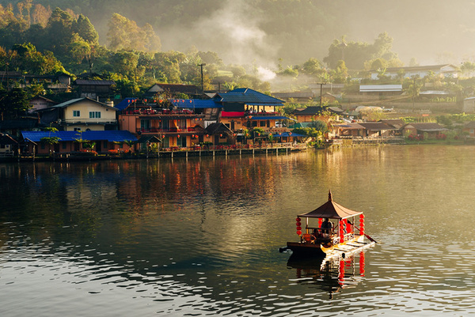
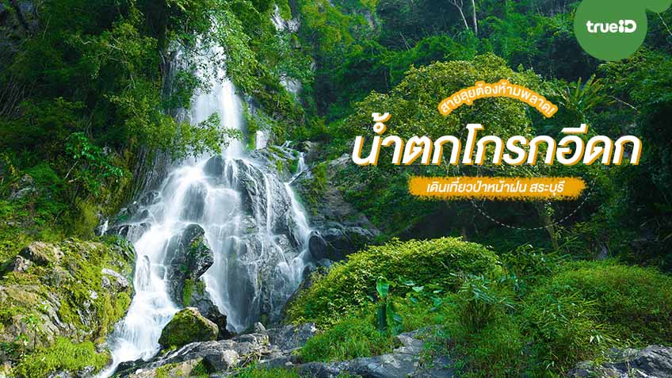
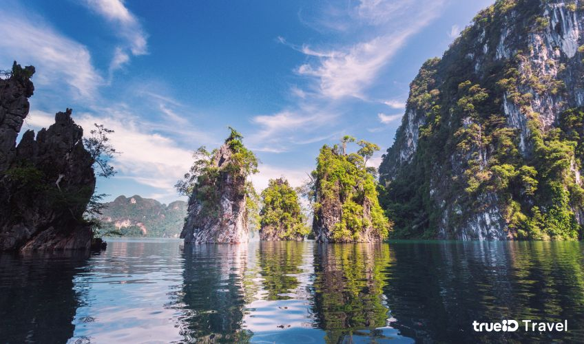

☻ 𝑃𝑙𝑎𝑐𝑒𝑠 𝐼 𝑤𝑎𝑛𝑡 𝑡𝑜 𝑔𝑜 ☻
⓵ บ้านรักไทย แม่ฮ่องสอน

🏕️ บ้านรักไทย เป็นหมู่บ้านที่ตั้งอยู่บนดอย ต.หมอกจำแป่ อ.เมืองแม่ฮ่องสอน จ.แม่ฮ่องสอน 🏕️
โดยห่างจากตัวเมืองแม่ฮ่องสอนประมาณ 44 กิโลเมตร
บ้านรักไทย หรือบ้านแม่ออ
เป็นหมู่บ้านชาวจีนยูนนานที่อพยพเข้ามาตั้งถิ่นฐานในประเทศไทยหลังจากสงครามกลางเมืองจีน
โดยในช่วงแรกเป็นการหลบหนีผิดกฎหมาย
แต่ภายหลังสามารถปราบปรามคอมมิวนิสต์ได้และได้รับสัญชาติจากรัฐบาลไทย
ปัจจุบันบ้านรักไทยเป็นสถานที่ท่องเที่ยวที่มีทั้งที่พัก ร้านอาหาร และสินค้าท้องถิ่น
เช่น ใบชาอบแห้ง พร้อมทั้งสถานที่ที่ยังคงรักษาประวัติศาสตร์และวัฒนธรรมของชาวจีนยูนนานให้คนรุ่นใหม่ได้เรียนรู้
..อ่านเพิ่มเติมได้ที่..🚗 =꒱‧*
⓶ บ้านอีต่อง เหมืองปิล็อก

🌄 บ้านอีต่อง ต.ปิล็อก อ.ทองผาภูมิ จ.กาญจนบุรี 🌄
เคยเป็นที่ตั้งของเหมืองปิล็อกที่รุ่งเรืองในอดีต โดยมีการขุดแร่ดีบุกจำนวนมากในช่วงปี พ.ศ. 2483
แต่เมื่อราคาสินค้าตกต่ำในปี พ.ศ. 2527-2528 เหมืองต่าง ๆ ปิดตัวลง และคนงานเริ่มทยอยกลับบ้าน
ปัจจุบันบ้านอีต่องกลายเป็นแหล่งท่องเที่ยวที่มีรายได้หลักจากการท่องเที่ยว
โดยมีที่พักโฮมสเตย์และบรรยากาศธรรมชาติที่สูงจากระดับน้ำทะเลกว่า 1,000 เมตร นักท่องเที่ยวสามารถเดินทางผ่าน
399 โค้งไปยังบ้านอีต่อง
และเยี่ยมชมแหล่งท่องเที่ยวใกล้เคียง เช่น น้ำตกจ๊อกกระดิ่น และเนินช้างศึก การเดินทางควรเริ่มก่อนเวลา 15.00 น.
เพื่อหลีกเลี่ยงการขับรถในตอนเย็น
..อ่านเพิ่มเติมได้ที่..🚗 =꒱‧*
⓷ น้ำตกโกรกอีดก สระบุรี

🏞️ น้ำตกโกรกอีดก ตั้งอยู่ที่ศูนย์ศึกษาธรรมชาติเจ็ดคด-โป่งก้อนเส้า ต.ท่ามะปราง อ.แก่งคอย
จ.สระบุรี 🏞️
เป็นน้ำตกที่มีทั้งหมด 8 ชั้น สูงประมาณ 350 เมตร โดยนักท่องเที่ยวส่วนใหญ่จะนิยมเดินทางไปถึง
ชั้น 6 และ 7 เพราะถือเป็นชั้นที่สวยที่สุด ชื่อน้ำตกมาจากภาษาชาวบ้าน "โกรก" หมายถึง ภูเขา และ "ดก" หมายถึง
เยอะ จึงเป็นที่มาของชื่อ "โกรกอีดก" ซึ่งมีความหมายว่า ภูเขาที่มีมากมาย
การเดินทางไปน้ำตกจะต้องเดินป่าเข้าป่าไปลึกกว่า 15 กิโลเมตร ผ่านเส้นทางที่ค่อนข้างธรรมชาติ ไม่มีทางที่ชัดเจน
ต้องติดต่อเจ้าหน้าที่ให้ช่วยนำทาง ระหว่างทางนักท่องเที่ยวจะได้พบกับทรายริมลำธารที่เป็นโป่งของผีเสื้อ
รวมถึงพืชพรรณในป่าหลายชนิด เช่น เห็ด มอส เฟิร์น และพืชป่าฝนที่อุดมสมบูรณ์
อีกทั้งยังมีเสียงกระรอกและนกนานาชนิดให้ได้ยินตลอดเส้นทาง และที่น่าตื่นตาตื่นใจที่สุดคือ
"ต้นกระเหรี่ยงขนาดยักษ์" ที่ต้องใช้คนหลายคนโอบถึงจะรอบ
น้ำตกโกรกอีดกจะสวยที่สุดในช่วงฤดูฝน (มิ.ย.-ก.ย.) เพราะน้ำจะไหลเต็มหน้าผาและมีน้ำตกทุกสาย
ส่วนพืชพรรณในป่าอย่างมอส เฟิร์น และเห็ดแชมเปญสีชมพูจะบานสะพรั่ง
ทำให้บรรยากาศการเดินป่าและการชมธรรมชาติที่นี่เต็มไปด้วยความอลังการและคุ้มค่ากับความเหนื่อยในการเดินทาง
..อ่านเพิ่มเติมได้ที่..🚗 =꒱‧*
⓸ เขื่อนเชี่ยวหลาน สุราษฎร์ธานี

🌅 เขื่อนเชี่ยวหลาน หรือเขื่อนรัชชประภา ตั้งอยู่ในอุทยานแห่งชาติเขาสก ต.เขาพัง อ.บ้านตาขุน
จ.สุราษฎร์ธานี 🌅
เป็นเขื่อนอเนกประสงค์ที่มีทะเลสาบกว้างใหญ่ ล้อมรอบด้วยภูเขาหินปูนและป่าเขา
โดยมีการใช้เพื่อผลิตพลังงานไฟฟ้าและช่วยบรรเทาอุทกภัย
รวมถึงเป็นแหล่งประมงน้ำจืดที่สำคัญของชาวบ้านในพื้นที่ไฮไลท์ของเขื่อนเชี่ยวหลาน ได้แก่ การล่องเรือชม
"เขาสามเกลอ" ที่มีลักษณะคล้ายกับกุ้ยหลินเมืองจีน, เขตรักษาสัตว์ป่าคลองแสงที่อุดมไปด้วยสัตว์ป่าหายาก,
ทะเลใน ซึ่งเป็นแหล่งน้ำใต้ถ้ำที่ต้องเดินลัดเลาะป่าและล่องแพเข้าถึง,
และถ้ำปะการังที่มีหินงอกหินย้อยคล้ายปะการัง ภายในถ้ำยังพบฟอสซิลสัตว์เซลล์เดียวจากยุคดึกดำบรรพ์อีกด้วย
นอกจากนี้ยังมีจุดชมวิวไกรสรที่ต้องเดินขึ้นเขา 2 กิโลเมตรเพื่อชมวิวสวย ๆ ของเขื่อนจากมุมสูง
..อ่านเพิ่มเติมได้ที่..🚗 =꒱‧*